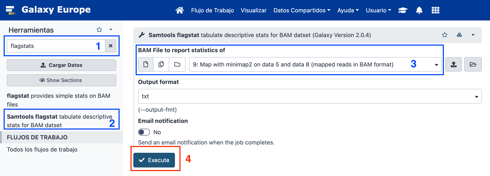

| Title | Galaxy |
|---|---|
| Training dataset: | Nanopore MinION Sequencing of a Monkey Pox Virus (MPXV) from Spain 2022 oubreak. Data is publicly available at SRA with ID ERR10297654. Paper |
| Questions: |
|
| Objectives: |
|
| Estimated time: | 40 min |
Nanopore techology is a third generation sequencing technique which allows to get longer sequences, but with reduced sequence quality. Different technologies have different formats, qualities, and specific known biases which make the analysis different among them. In this tutorial, we are going to see an example of how to assemble long reads from a Nanopore sequencing run.
+ icon at the top of the history panel and create a new history with the name nanopore assembly 101 tutorial as explained hereSRA in the tool search bar and select Faster Download and Extract Reads in FASTQ format from NCBI SRAERR10297654
NCBI using the search toolbox and select NCBI Accession Download Download sequences from GenBank/RefSeq by accession through the NCBI ENTREZ API
Using SRA and NCBI API downloads data as hidden so we are going to unhidde this data as follows:


minimap2 using the search toolbox and select Map with minimap2 A fast pairwise aligner for genomic and spliced nucleotide sequences
flagstatst using the search toolbox and select Samtools flagstat tabulate descriptive stats for BAM datset
This training history is available at: https://usegalaxy.eu/u/s.varona/h/nanopore-assembly-101-tutorial
Note: Nanopore data is known to have more error than short sequencing reads. This is why assembly post-processing is strongly recommended, usually using combined sequencing aproximation with both Nanopore and Illumina reads.